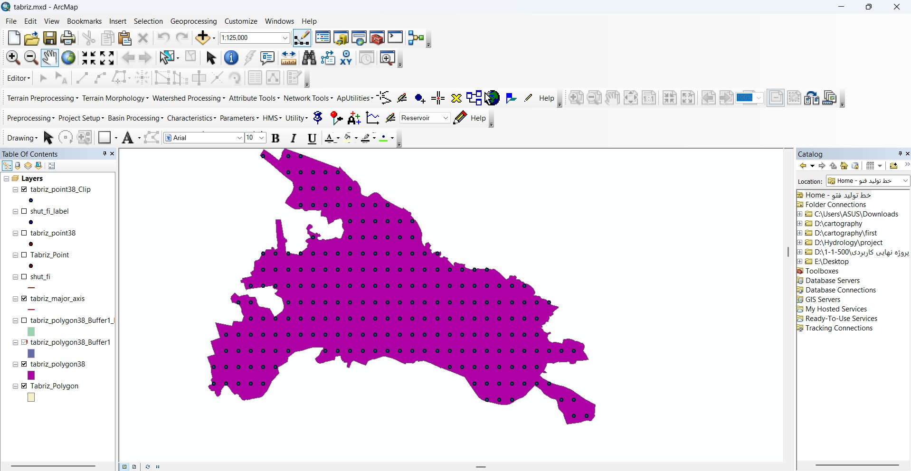

توضیحات پروژه چهارم
 |
||
1403/1/29 |
خط تولید فتوگرامتری |
دکتر احمد ابوطالبی |
توضیح |
در قالب یک پروژه فتوگرامتری، به برداشت و پیادهسازی نقاط با استفاده از تصاویر و دادههای مکانی پرداختم. در این پروژه، نقاط موردنظر شناسایی و مختصات آنها بررسی شد و مراحل برداشت و پیادهسازی با هدف افزایش دقت مکانی انجام گرفت. این تجربه باعث تقویت مهارتهایم در فتوگرامتری، تحلیل دادههای مکانی و آشنایی عملی با روشهای برداشت و پیادهسازی نقاط شد |
|